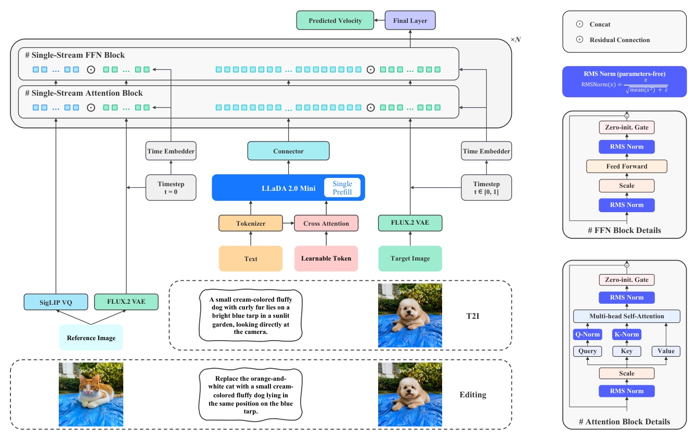
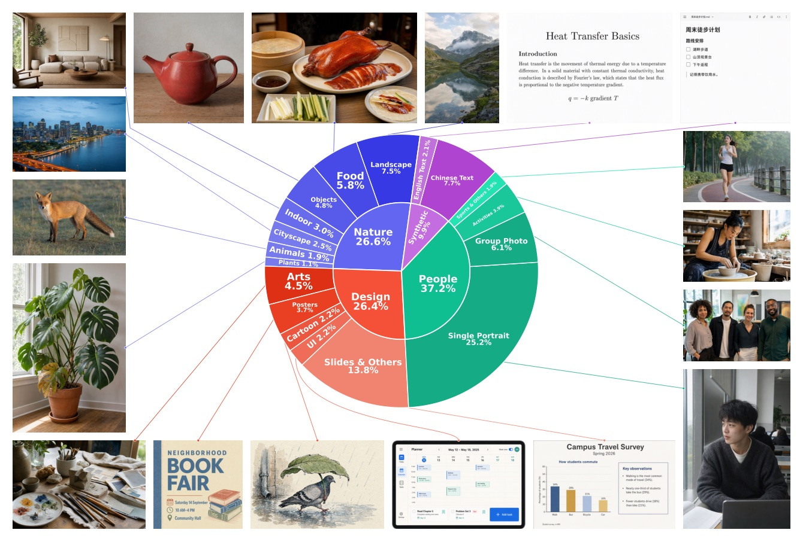

從 image-only visual prior 到統一 generation / editing 的 fully open training recipe
6B Diffusion Transformer · 220M generation samples · Base + 2–4 step Turbo
真正的主張不是「換了更大的 DiT」，而是把 視覺先驗、文字對齊、reference editing、few-step serving 串成一條可檢查、可重做的訓練路徑。

只更新 DiT、RQA、connector；SigLIP-VQ 與 VLM 維持 frozen。
先在 same-crop 上學「從稀疏可見 patches 補出完整 visual structure」，再學 text-to-image。這避免把 caption–image mismatch 當作 generation 的先天噪音。

| Stage | Pixel budget | Condition | Purpose |
|---|---|---|---|
| PT | 256² | image-only | visual prior |
| MT | 512² buckets | image-only | adapt spatial budget |
| SFT | 512² → 1024² | image–text | semantic alignment + detail |
| Editing | 1024² | T2I:I2I = 1:1 | retain generation while learning edits |
在 Qwen-Image-Bench，LLaDA-Image 報告 EN 53.53 / CN 53.38 overall；相對次佳開源 Z-Image Turbo 分別 +1.87 / +0.67。
| Open-source model | EN overall | CN overall | Reading |
|---|---|---|---|
| LLaDA-Image | 53.53 | 53.38 | reported open-source SOTA |
| Z-Image Turbo | 51.66 | 52.71 | next-best on both tracks |
| Qwen-Image 2512 | 51.32 | 52.06 | strong bilingual baseline |
| LLaDA-Image Turbo | 50.98 | 50.27 | four-step evaluation |
比較需保留語境：baseline 數字是各系統報告的 raw scores；此處不是 independent replication。
| Benchmark / model | EN | ZH | Other |
|---|---|---|---|
| LongText: LLaDA-Image | 0.923 | 0.913 | long-string correctness |
| CVTG-2K: LLaDA-Image | 0.875 | 0.945 | word accuracy / NED; CLIPScore 0.818 |
| CVTG 2-region → 5-region | 0.892 | 0.857 | word accuracy decline |
| LLaDA-Image GenEval | Score | Interpretation |
|---|---|---|
| Single object | 1.00 | strong |
| Two-object composition | 0.98 | strong |
| Attribute binding | 0.84 | tied-highest among compared models |
| Counting | 0.53 | specific compositional weakness |
| Overall | 0.85 | authors treat as legacy diagnostic |
作者自己也說 GenEval / DPG-Bench 容易與 human-preference rankings 分歧，不把它們當主要 quality evidence。
| GEdit-Bench | EN GSC | EN GPQ | EN GO | CN GO |
|---|---|---|---|---|
| LLaDA-Image | 8.043 | 7.182 | 7.336 | 7.294 |
| FireRed-Image-Edit | 8.363 | 8.245 | 7.943 | 7.887 |
| Nano-Banana Pro | 8.102 | 8.344 | 7.738 | 7.799 |
這份 recipe 最有價值的地方，是把變因順序固定：先 image-only prior → 再 resolution adaptation → 再 paired alignment → 最後 joint task + distillation。
The key observation is that an image already contains the high-level semantics required to supervise its generation.
關鍵觀察是：一張圖本身已含有監督其生成所需的高階語意。§4.2 p.12
Image-only mid-training decouples these two changes: the model first adapts to the 512² pixel budget ... and only then transitions to textual supervision during SFT.
image-only mid-training 將兩種改變拆開：先適應 512² pixel budget，之後才在 SFT 轉向文字監督。§4.3 p.14
The semantic pathway in Eq. (6) and the pixel pathway in Eq. (8) are complementary.
Eq. (6) 的語意路徑與 Eq. (8) 的像素路徑是互補的。§2.3 p.10
一套有明確 engineering thesis 的 fully open image-generation recipe；headline 分數之外，真正可帶走的是 staged curriculum 與 dual-path editing 的可驗證假說。